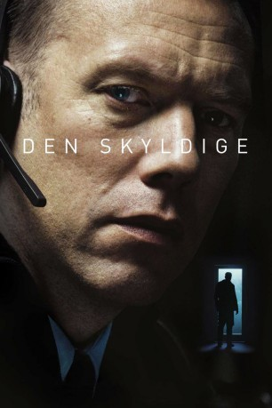
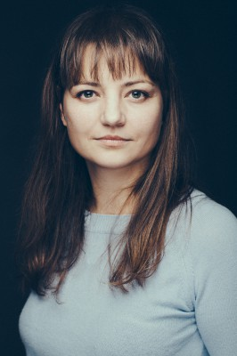
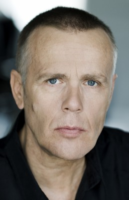

#10183 The Guilty
 gesehen am 27.12.2018
gesehen am 27.12.2018
 
 IMDB-Wertung: 7.6 / 10
IMDB-Wertung: 7.6 / 10  Metascore: 83
Metascore: 83 
Der Polizist Asger Holm erhält in der Notrufzentrale einen Anruf von einer entführten Frau. Als die Verbindung plötzlich abbricht, beginnt die Suche nach der Anruferin und ihrem Entführer. Asgars einzige Waffe ist das Telefon, mit dem er ein noch größeres Verbrechen aufdeckt als zunächst angenommen.
Jahr: 2018
Dauer: 85 Minuten
FSK: 12
Land: Dänemark Studio: Ascot Elite Entertainment GroupTonspuren: DD5.1 - ,
Untertitel: Deutsch,
Auflösung: 1080p (1920x808) Größe: 7147 MB
Genre: Thriller, Drama, Krimi
Regisseur: Gustav Möller
Drehbuch: Gustav Möller, Emil Nygaard Albertsen
Soundtrack: Carl Coleman, Caspar Hesselager
Darsteller:
- Jakob Cedergren als Asger Holm
- Jacob Lohmann als Bo
-  Laura Bro als Journalist
-  Morten Suurballe als Mand på Skælbækgade
- Morten Thunbo als Alarmoperatør #1
- Anders Brink Madsen als Alarmoperatør #3
- Matt Fowler als Multiple
- Jessica Dinnage als Iben
- Omar Shargawi als Rashid
- Johan Olsen als Michael
- Katinka Evers-Jahnsen als Mathilde
- Jeanette Lindbæk als Vagtleder Nordsjælland
- Simon Bennebjerg als Junkie
- Guuled Abdi Youssef als Mand ved natklub
- Caroline Løppke als Fuld kvinde
- Peter Christoffersen als Politiassistent i hus
- Nicolai Wendelboe als Politiassistent i bil
- Maria Gersby als Alarmoperatør #2
- Tommy Bach als Aftenvagten
- Jan Christensen als Aftenvagten
- Christian Lassen als Aftenvagten
- Michael Rud als Nattevagten
- Jørgen Niclasen als Nattevagten
- Helena Malmros als Nattevagten
- Axel Christensen als Nattevagten
Datei: X:\2018(G-M)\Guilty, The (2018, FSK12, 1920x808).mkv seit 17.12.2018
Festplatte: HD 2018(G-Z)-2019(A-Z)
 Es gibt insgesamt 138 Filme in der Gruppe '2018(G-M)'
Es gibt insgesamt 138 Filme in der Gruppe '2018(G-M)'